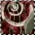

E C H O S : P O W E RSasame's power is sound. He has a device on his ear that will detect negative energy or beings, such as Mayouchuu (demon bug). As the Knight of Sound, he has the ability to control and manipulate any type of sound. He can hear sounds from miles away and can send strong vibrations that will make the ground cave in and shatter. When Himeno prets with him, she also has the ability to manipulate sound. Her attack as the Sound Pretear is Sound Arrow. For her first time with the attack, Himeno placed her mouth between two fingers and blew, sent a huge wave of vibration across a pond, wrecking the surrounding bricks and sending a nearby Mayune sailing into the bushes. XD
Sasame's skills and power matches that of Hayate. After Sasame devoted himself to Saihi, he was willing to fight and kill Hayate because it was Saihi's wish for Hayate to be killed. Aside from his power to manipulate sound, Sasame is also very skilled in sword fighting, as shown in a battle with Hayate. Sasame was able to defeat Hayate in the battle and almost killed him. But he hesitated for a moment and Saihi decided to keep Hayate alive for the time being. Sasame's powers grew as Saihi took Liefe from Leafenia and gave him dark powers. In doing so, Leafenia was completely destroyed. Without Saihi's power, Sasame's power is still probably one of the most powerful of the seven knights, considering that he's had the most experience.
-----------------------------------------
Broken Echo is an AinoyumeNET production. Pretear was created by Kaori Naruse and Junichi Sato, © 2001. All rights reserved.